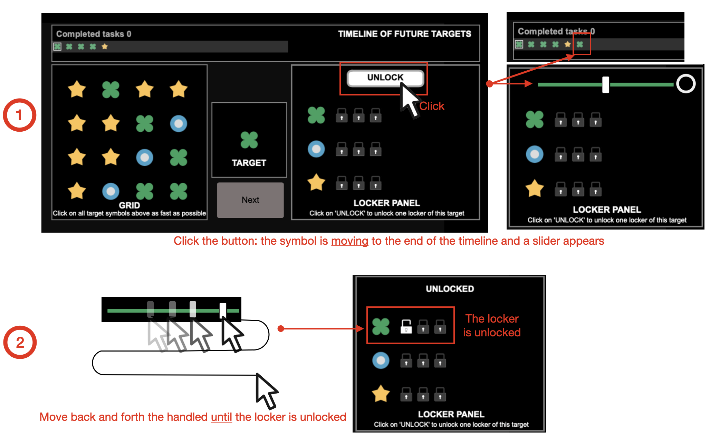

You just learned how to use EXPERT mode of the game.
Unfortunately, the EXPERT mode is not available by default. You first need to unlock all lockers.
Below, the explanation to unlock one locker.
Click on “Next” to practice the locker panel mode.
